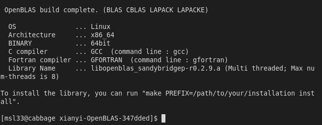
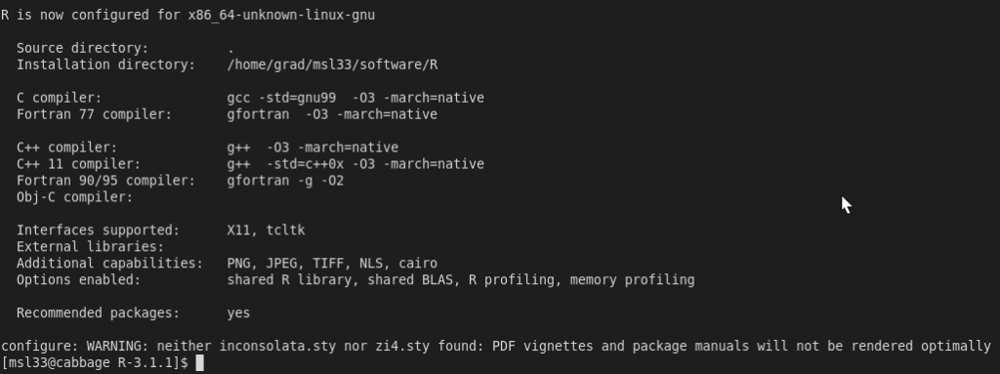
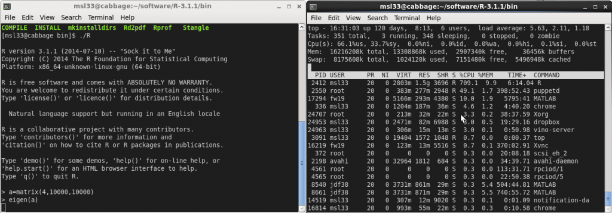

1. Get OpenBLAS
2.1 Get R
2.2 Specific Instructions for DSS Users
3. Validation
4. Benchmark
This guide is intended to aid any R and Linux user who desires a threaded version of BLAS. In particular I hope this will allow other grad students, who like me do not have many user privileges on their office computer, to follow suit and exploit multiple cores to speed up their linear algebra computations within R. The following will be performed on Scientific Linux 6.4 but has should be completely general. If you are a Ubuntu user, then there is an elegant and streamlined process for changing BLAS libraries and a recommended post about it here. I use Fedora on my laptop, and the following has also been tested thereupon.
My office computer has a quadcore processor with two threads per core but I also have access to a departmental computer with 4 sockets and 12 cores per socket (1 thread per core), so it really makes sense to use a threaded version of BLAS. If you are curious about the hardware on your own computer you can run the command “cat /proc/cpuinfo” or “lscpu”.
Unfortunately my office computer is part of a network upon which I do not have permissions to change ‘/usr/lib64/R/lib/libRblas.so’. Moreover R appears to be running serially: if you start up R and get the PID (process ID) from ‘top’ or ‘ps aux | grep R’ or something and then execute ‘cat /proc/PID/status | grep Threads’ you can see there is only one thread available.
[msl33@cabbage ~]$ cat /proc/13605/status | grep Threads Threads: 1
(where 13605 was the process ID of my R process. That is using the default R on the network. One could appeal to the network administrator to change things for you but they probably won’t because a parallel BLAS implementation may cause problems for other users who require a serial BLAS, such as those that use the multicore environment to perform inherently parallel algorithms such as parallel tempering instead of using idle cores to speed up the linear algebra. There are also some known conflicts with the multicore package in R. There is, however, nothing stopping the user from compiling one’s own custom R build in one’s home directory and just changing the executable path thereto. In addition, you then have the power and freedom customize R to your needs – at the moment I have some very large matrices which would benefit from a threaded BLAS but at some point I may want to revert to a tuned serial BLAS such at ATLAS for certain parallel algorithms.
Firstly, go ahead and create a directory in which to keep all your custom software.
[msl33@cabbage ~]$ pwd /home/grad/msl33 [msl33@cabbage ~]$ mkdir software
Download OpenBLAS
Make a directory “openblas” in the “software directory.
[msl33@cabbage ~]$ cd software/ [msl33@cabbage software]$ mkdir openblas
Next, grab the tarball from the OpenBLAS homepage. Change directory into where you downloaded the tarball and extract the files from it.
[msl33@cabbage ~]$ cd Downloads/ [msl33@cabbage Downloads]$ tar -xvf xianyi-OpenBLAS-v0.2.9-0-gf773f49.tar.gz
While this is running, fill a kettle with some water and turn it on, this stage is very important.
Change directory into where you extracted the files and verify that NO_AFFINITY=1 is uncommented in the Makefile.rule. If so proceed and run make.
[msl33@cabbage ~/Downloads]$ cd xianyi-OpenBLAS-347dded/ [msl33@cabbage xianyi-OpenBLAS-347dded]$ cat Makefile.rule | grep NO_AFFINITY NO_AFFINITY = 1 [msl33@cabbage xianyi-OpenBLAS-347dded]$ make
Now is a good time to “make” some tea with the water prepared earlier. When done successfully one will see

Now, as instructed above, install to the “software” directory made earlier.
{kind=link}
[msl33@cabbage xianyi-OpenBLAS-347dded]$ make PREFIX=/home/grad/msl33/software/openblas install ... Install OK!
In openblas/lib there will be a file “libopenblas.so”, needed for later. That’s it for openblas, next we will do R.
Download R
Let’s create an R directory in software. Go onto the R homepage, then download, then choose a mirror and grab the tarball of the latest version. Download it to your “software” directory and extract it as before with “tar -xvf R-3.1.1.tar.gz”. Once extracted, remove the tarball and change directory into R-3.1.1. Before running the configure script one might bring some customizations into consideration in the name of efficiency. One might consider upping the optimization level from 2 to 3 and adding march or mtune by editing “config.site” and changing “## CFLAGS=” on line 53 to “CFLAGS=’-O3 -march=native'” and making similar changes for FFLAGS and CXXFLAGS. It is noted in the R Installation and Administration documentation that these can produce worthwhile speedups but come with a warning that the build will be less reliable, with segfaults and numerical errors creeping in. It is safest to leave things regular (reccommended link) but I’ll take the risk. Now, if you are not using a computer on the duke statistical science network, run the configure script, otherwise see the additional instructions before running configure.
[msl33@cabbage R-3.1.1]$ ./configure --prefix=/home/grad/msl33/software/R --enable-R-shlib --enable-BLAS-shlib --enable-memory-profiling --with-tcltk=no
BEGIN ADDITIONAL INSTRUCTIONS FOR DUKE STATISTICAL SCIENCE STUDENTS
[On the DSS computers some further instructions are required to locate headers and libraries. The first time I tried to make on my office computer I encountered this error. “jni.h” could not be found. The error was resolved by locating it and then export the environment variable JAVA_HOME.
[msl33@cabbage software]$ locate jni.h /usr/lib/jvm/java-1.7.0-sun-1.7.0.11/include/jni.h [msl33@cabbage software]$ export JAVA_HOME=/usr/lib/jvm/java-1.7.0-sun-1.7.0.11/
In addition, when running the configure script the readline headers/libs could not be found. We’ll just borrow them from some other software. Add to CFLAGS, FFLAGS, CXXFLAGS “-I/opt/EPD_Free/include -L/opt/EPD_Free/lib” in addition to any other flags that you have set. Also make a lib directory and copy them in.
[msl33@cabbage R-3.1.1]$ mkdir lib [msl33@cabbage R-3.1.1]$ cp /opt/EPD_Free/lib/libreadline.* lib/ [msl33@cabbage R-3.1.1]$ cp /opt/EPD_Free/lib/libncurses* lib/
Now run the configure line above.]
END ADDITIONAL INSTRUCTIONS FOR DUKE STATISTICAL SCIENCE STUDENTS
Once the configure has completed, you’ll see a summary below like

Now issue the command “make”, it will take some time. Once make has finished, you can execute “make install” to populate the software/R directory created earlier but you don’t need to. Change directories to lib and make a backup of libRblas.so and create a symbolic link to the openblas library that was made earlier.
{kind=link}
[msl33@cabbage ~]$ cd software/R-3.1.1/lib [msl33@cabbage lib]$ pwd /home/grad/msl33/software/R-3.1.1/lib [msl33@cabbage lib]$ mv libRblas.so libRblas.so.keep [msl33@cabbage lib]$ ln -s /home/grad/msl33/software/openblas/lib/libopenblas.so libRblas.so
That was the last step.
Setup Validation
The R executable in the bin directory should now use openblas. Note this is the R executable you now need to run in order to use the custom built R with openblas. Just typing R in terminal will load the old /usr/lib64… which we students didn’t have the permissions to alter. You can, however, create an alias in your .bashrc file by inserting the line ‘alias R=”/home/grad/msl33/software/R-3.1.1/bin/./R”‘. Now when you type R in a terminal it will load the new R and not the old one. One can check that R executable depends on the correct linked shared blas library with the “ldd” command.
[msl33@cabbage bin]$ pwd /home/grad/msl33/software/R-3.1.1/bin [msl33@cabbage bin]$ ./R CMD ldd exec/./R | grep blas libRblas.so => /home/grad/msl33/software/R-3.1.1/lib/libRblas.so (0x00007f62e3fb7000) [msl33@cabbage bin]$ ls -lt ../lib | grep openblas lrwxrwxrwx 1 msl33 grad 53 Jul 16 15:35 libRblas.so -> /home/grad/msl33/software/openblas/lib/libopenblas.so
In addition, execute “./R” from the “bin” directory (or just R if you set up the alias) and grab the process id.
[msl33@cabbage bin]$ ps aux | grep R | grep software | awk '{print $2}'
2412
[msl33@cabbage bin]$ cat /proc/`ps aux | grep R | grep software | awk '{print $2}'`/status | grep Threads
Threads: 8
[msl33@cabbage bin]$
Evidently the R session now has 8 threads available. Finally, lets perform an eigen-decomposition and look at the cpu usage using top. You’ll see it light up all of your cores.

{kind=link}
Benchmark
Using this benchmark the reference BLAS took 32.1 seconds whilst openBLAS took 7.1 seconds.